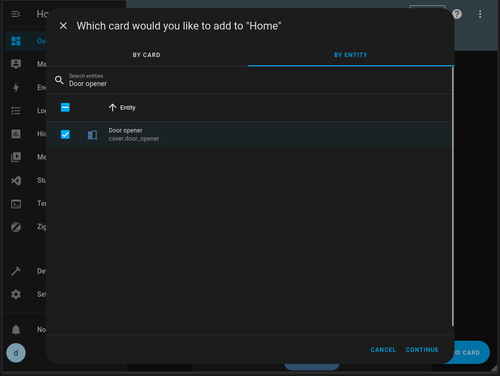

Deployment and setup¶
Cloning the repository¶
Initially, clone the repository using Git —
git clone https://www.github.com/dwhweb/dooropenerpico.git
Creating MQTT credentials¶
Assuming you plan on using the Home Assistant/MQTT broker functionality you’ll need to create new user login credentials for the Pi Pico to use. You can find this option on Home Assistant in Settings → People → Users (Add user button) i.e.
{kind=link}
Once you’ve done that, you might want to verify that you can connect to the broker using MQTT explorer.
Deploying code to the Pi Pico¶
Before you can copy the code across, you’ll need to copy the MicroPython firmware to the Pico, follow the instructions on the Raspberry Pi website.
Deploying via script¶
Once you have the MicroPython firmware installed, assuming you’re running a *nix variant you can deploy the code to the Pi Pico using deploy.sh (you need rshell for this to run, see the software requirements section).
The script will inform you that the current contents of the Pi Pico will be erased, and ask if you want to set up networking. Assuming this is the case, you will be prompted for —
Wifi SSID
Wifi password
MQTT broker hostname/IP
MQTT port
MQTT username
MQTT password
Otherwise, the credentials file will be deleted and the Pico will operate via button press only (no networking) on boot.
Note
The deployment script takes a little time to copy files across to the Pi Pico and provides little visual feedback while doing so, please be patient!
Deploying manually¶
If you’re running Windows (or just don’t want to run the script) and want to deploy the code to the Pi Pico manually, you need to copy main.py and the lib/ directory across. You can do so using Thonny. With the Pi Pico connected, navigate to the directory where you cloned the code repository, then right click on the file/directory and select “Upload to /” i.e.
{kind=link}
You can alternatively use rshell to copy the files with —
cp main.py /pyboard/main.py
cp -r lib/ /pyboard/
Once you’ve done that, you’ll need to edit the credentials file /lib/dooropenerpico/credentials.conf to add Wifi/MQTT credentials as detailed above, or alternatively just delete the file if you don’t plan to use network functionality.
Configuration options¶
There are a number of configuration options held within /lib/dooropenerpico/config.conf that you might want to change, these are —
Key |
Notes |
|---|---|
|
The length of time the LEDs should pulse to indicate activity, in seconds. |
|
Brightness of the LEDs when on, value is a float between 0-1. |
|
The time in seconds after which the door opener aborts an open/close if the door doesn’t detect it is in the opposite state, this is a safety feature. The web server provides a feature to time how long actuation takes which is useful in working out an appropriate value, see the usage section. |
|
Time after which the door changes speed when opening in seconds, the intention being that you could set the door to open more slowly for the last portion so it opens gently and does not slam. If you don’t want this functionality, you can just set |
|
As above, but for the door closing as opposed to opening. |
|
The speed at which the door should open between 0 (full speed anti-clockwise) and 1 (full speed clockwise). |
|
As above, but for closing. |
|
The speed at which the door should open for the last (cushion) portion between 0 (full speed anti-clockwise) and 1 (full speed clockwise). |
|
As above, but for closing. |
|
Prevents activation of the left reed switch being detected as multiple events, value is in seconds. |
|
As above, but for the right reed switch. |
|
Interval at which the Pi Pico should attempt to ping the MQTT broker, required to detect connection issues and re-establish connection automatically. If you encounter frequent connection issues it might be worth looking into getting an additional wireless access point or mesh setup. |
|
Speed at which the servo moves when the user presses the “left” button in the web ui, this is a float value between 0 and 1. |
|
As above, but for the “right” button. |
You’re most likely to need to tune the timeout and cushion times/speeds as it is likely that your coop is a different size than mine and hence the door will take a different amount of time to open or close.
You’ll likely need to tune left_speed and right_speed as well, even when using the same servo. There is a trim pot recessed into the side of the servo that you can set with a small phillips head screwdriver, this should be adjusted such that the servo doesn’t move when stopped (you can send a stop signal from the web ui, see the usage section).
Warning
Be careful when editing this file as it is validated on boot and if any key is missing or does not have an associated value the Pico won’t start.
Setting up Home Assistant¶
I’m assuming at this point you have the Pico configured such that it successfully connects to both your Wifi and the Home Assistant MQTT broker, you can refer to the usage section to see what the console output looks like in Thonny.
Configuration in Home Assistant at this point should be relatively straightforward and the Pico should show in the list of entities (Settings → Devices & Services → Entities) —

You can then add the door opener to the dashboard (Overview → Edit dashboard (pencil) icon → Add card → By entity) —
{kind=link}
You could then create an automation, for example, to open the door automatically at sunrise (Settings → Automations & scenes → Create automation) —
{kind=link}
I don’t personally automate closing the door, as the time at which my chickens decide to go in varies and I don’t want them to accidentally get trapped in the door.